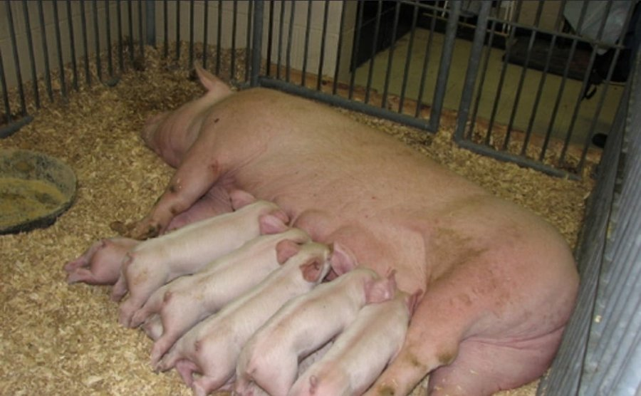

HOMOCLAVEREI_S_024Enfermo
| Peso al nacer | 40 |
| Peso destete | 89 |
| Ganancia peso | 357 |
| Consumo leche | 13 |
| Consumo alimento | 7 |
| Edad al destete | 13 |
| Perimetro | 6,3 |
| Dias tratamiento | 26 |
| Vigor nacer | 57 |
| Consumo calostro | alto |
| Salud general | enfermo |
| Consistencia heces | fluida |
| Reflejo | debil |
| Condicion umbilical | infectado |
| Apetito | malo |
| Aspecto pelaje | opaco |

ANIMAL ENFERMO — REGISTRO CLÍNICO
DIAGNÓSTICO
Diarrea neonatal (colibacilosis) con onfalitis (infección del ombligo)
SÍNTOMAS
Heces fluidas (diarrea), ombligo inflamado e infectado, reflejo débil, falta de apetito, pelaje opaco.
TRATAMIENTO
Rehidratación oral con electrolitos y antibiótico contra E. coli indicado por el veterinario; limpieza y desinfección del ombligo con yodo y antibiótico de amplio espectro; mantener al lechón en un lugar seco y caliente; duración del tratamiento: 26 días.
OBSERVACIONES
Vigilar hidratación, temperatura y ganancia de peso; separar de la camada si empeora. Se espera la recuperación al terminar el tratamiento.